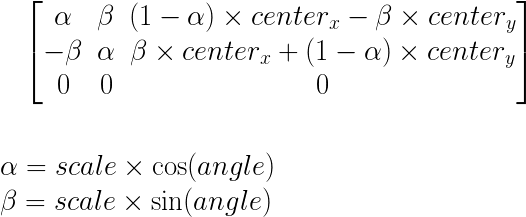
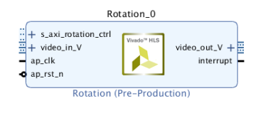

This example demonstrates rotating video frames by a certain angle in Model Composer.
This example uses the following Mathworks toolboxes.
In this example, we rotate video frames by a small angle using the warp transform block in Model Composer.
The Warp transform block requires a 3x3 input matrix that specifies the transformation on the input frame. For this example, we are setting the transfomration matrix in such a way to rotate the input frame around the center of the frame by a small angle. The general transformation matrix is:

To form this transformation matrix, we use the xmcImportFunction command to import C code into the model as a block. You can find the specific command to use in the importfunction.m file. Note that a pragma used in createtransformmatrix.h is SUPPORTSSTREAMING. This pragma is needed to stream the input frame into the design, resulting in a smaller foot print on the FPGA.
We set the interface for this design using the Interface spec block that is under the main subsystem. This design has a video input to stream the video into the design. For this input we are using the AXI4-stream protocol. For all the other inputs that are used for forming the transformation matrix, we use the AXI4-lite protocol. We bundle all the AXI4-lite inputs under the name of rotation_ctrl. The image below shows one of the panels in the Interface spec block.
We use the IP Catalog export flow in Model Composer to package the design as an IP, which can then be imported into the Vivado IP Catalog to connect with other IPs in the IP Integrator tool. The image below shows the generated IP in the Vivado IP Catalog. Note the input and output ports, and the bundled port named rotation_ctrl.

Copyright 2020 Xilinx
Licensed under the Apache License, Version 2.0 (the "License");
you may not use this file except in compliance with the License.
You may obtain a copy of the License at
http://www.apache.org/licenses/LICENSE-2.0
Unless required by applicable law or agreed to in writing, software
distributed under the License is distributed on an "AS IS" BASIS,
WITHOUT WARRANTIES OR CONDITIONS OF ANY KIND, either express or implied.
See the License for the specific language governing permissions and
limitations under the License.